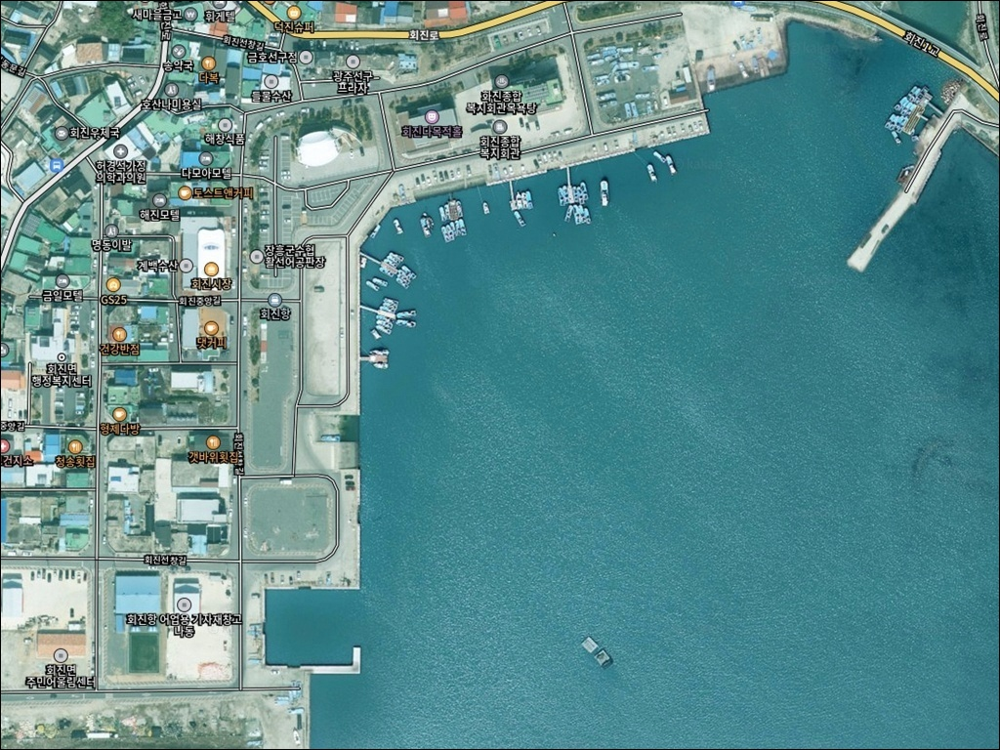
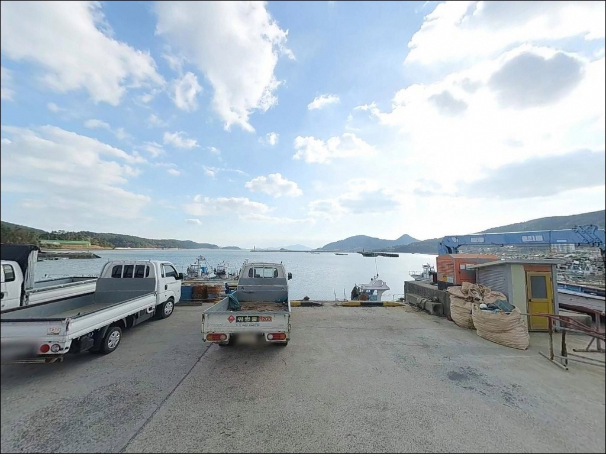
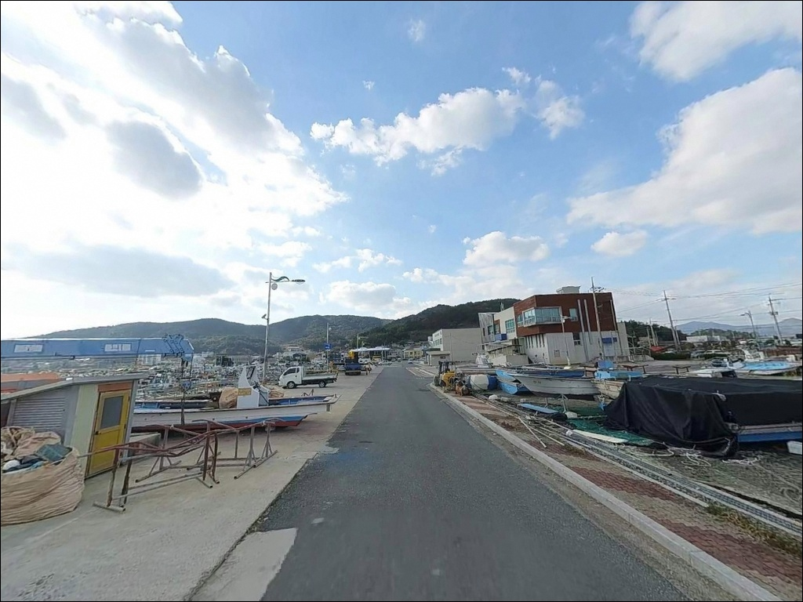
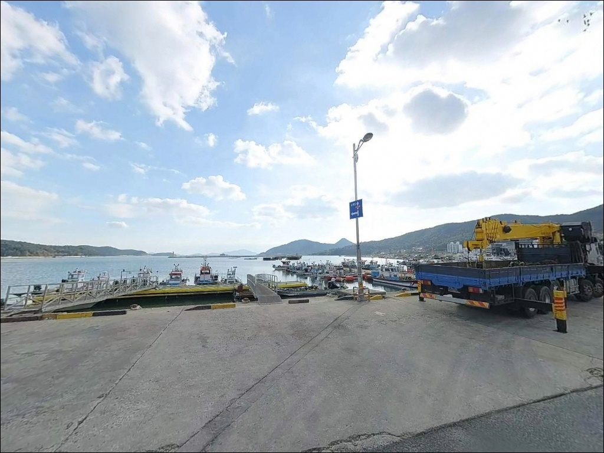
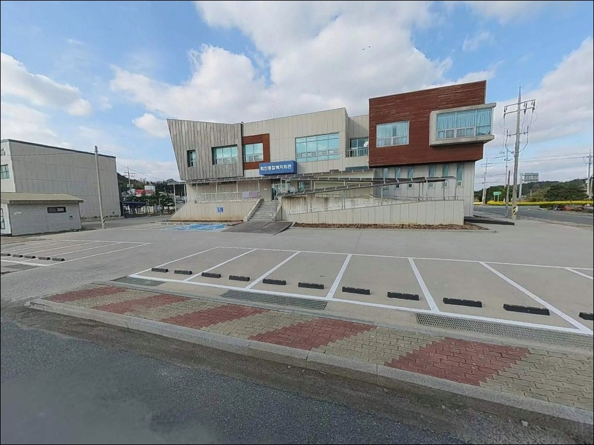
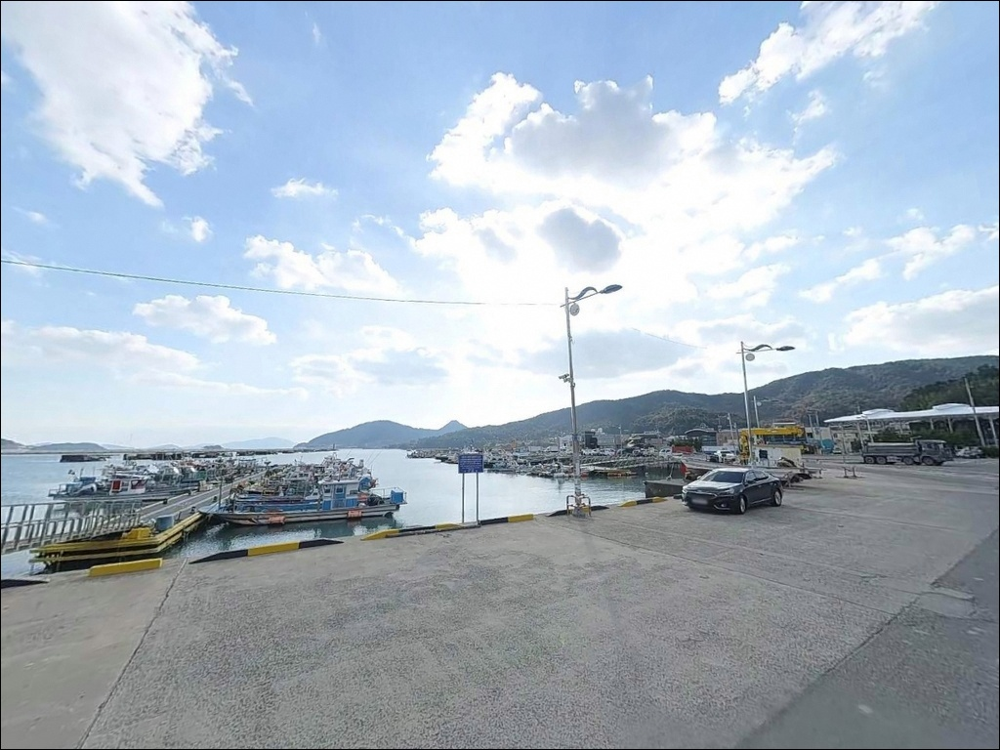
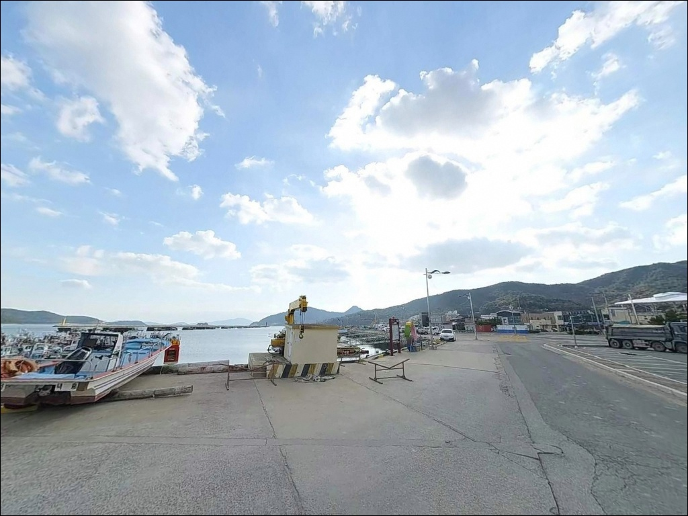
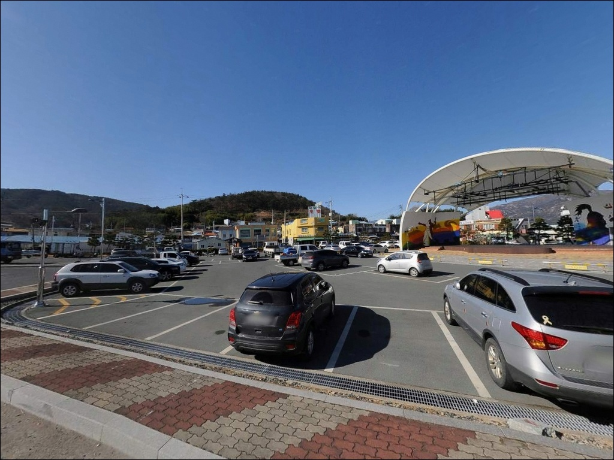
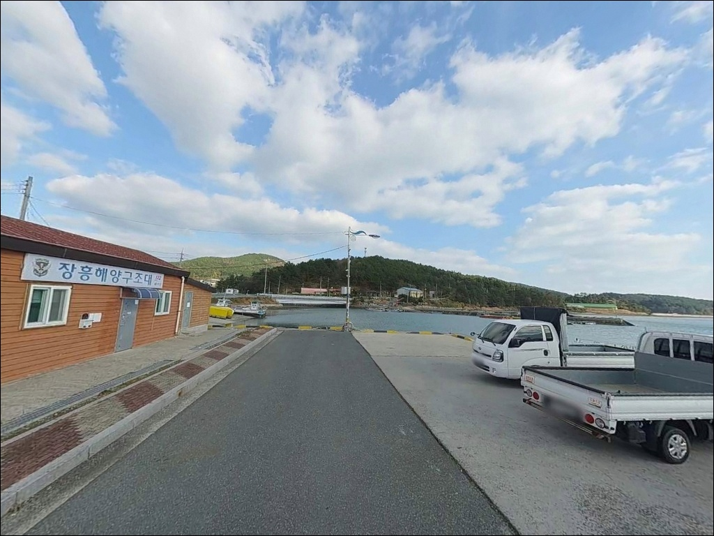

이 페이지에는 광고(제휴 링크 포함)가 있으며, 광고 링크를 통해 구매하면 운영자가 판매 수익 또는 수수료를 받을 수 있습니다. 포인트 사진: 카카오맵 스카이뷰·로드뷰. 이 페이지의 지도·사진 이미지는 카카오맵의 실제 서비스 이미지와 다를 수 있습니다.

회진항
전남 장흥군 회진면 회진리 1798-28
방파제 외항 끝단에서 어떤 채비를 쓸지
결정하지 않고 도착하면,
조류가 가장 살아 있는 타이밍을
그냥 흘려보내게 됩니다.
회진항 방파제는 끝단으로 갈수록
수심이 급격히 깊어지는 구조로,
자리 선택과 조류 판단이 조과의 전제 조건입니다.
전남 장흥군 회진면에 위치한 회진항은
1999년 국가어항으로 지정된 항구입니다.
득량만 서쪽 입구, 노력도 북서쪽 포구 안에 자리해
외해 너울이 직접 들이치지 않으면서도
만 입구를 통한 조류 소통이
꾸준히 이루어지는 지형 구조를 갖추고 있습니다.
이 글은 회진항의 방파제 구조와
낚시 방식별 공략 조건, 진입 환경,
차박 여건에 집중합니다.
특정 어종의 조황 단정이나
시설 운영 여부 확정은 이 글의 범위에 포함되지 않습니다.

회진항은 회진선창길을 통해
항구까지 차량 진입이 가능합니다.
국가어항으로 지정된 이후
어선 정박과 화물 차량 진입을 전제로
도로 폭이 확보되어 있어
캠핑카를 포함한 대형 차량도 진입에 무리가 없는
구조입니다.
장흥읍 또는 인근 지역에서
회진면 방향 지방도로를 따라 진입하면
회진리 시가지를 지나 항구로
자연스럽게 연결됩니다.
급경사 구간이 없고 포장 상태도 안정적이어서
야간 진입에도 크게 불편함이 없습니다.
항 내부는 어선·화물 차량 동선을 고려해
선착장 주변과 항만 배후지에
포장 광장이 조성되어 있습니다.
회차 공간이 넓고 주차 후보지도
방파제 진입부 인근 공간과
물양장 인접 공터 등 복수로 존재합니다.

회진항은 항만·어촌·상가가 혼재하는
소도시형 항구 분위기입니다.
선착장 배후 도로를 따라
횟집과 상점이 줄지어 있어
완전한 고립형 분위기는 아니며,
항만 특유의 생활 소음이 있는
환경입니다.
국가어항 특성상 선착장과 부두 라인에
가로등·간판 조명이 설치되어 있어
야간 기본 시야는 확보됩니다.
다만 방파제 끝단은 상대적으로 어두운 구간이 있어
야간 낚시 시 헤드랜턴 지참은 필수입니다.
민가와 상가가 인접해 있으므로
차박 자리는 어선 작업 동선에서
벗어난 위치를 기준으로 잡는 편이 좋습니다.
득량만 안쪽 내만 구조 덕분에
외해 파도가 직접 들이치는 구간은 없습니다.
바람 영향은 방위에 따라 다르므로
출발 당일 기상 확인 후 주차 방향을
결정하는 방식이 현실적입니다.

항 주변에는 신선한 해산물을 취급하는
횟집이 다수 입점해 있습니다.
된장물회가 지역 특색 음식으로 알려져 있어
출조 전후 식사 해결이 어렵지 않습니다.
회진면 소재지 방향으로 이동하면
식당과 소형 마트가 차량 10분 내에
위치합니다.
정남진 해양낚시공원이
반경 약 3~5km 내 회진면 대리에 위치합니다.
데크형 바다낚시터로 조성되어 있으며
매주 수요일~일요일 운영,
월·화요일은 휴장입니다.
연락처는 061-867-0555이며,
방문 전 사전 확인을 권합니다.
장흥읍 방향 대형 마트와 의료시설은
차량으로 약 25~30km 거리에 있습니다.
응급 상황 대비용 기본 의약품과
식수, 연료는 출발 전 충분히
준비하고 진입하는 편이 안전합니다.

회진항 방문 전 가장 먼저 확인할 사항은
방파제 정비사업 진행 구간입니다.
현재 343억 원 규모의 시설 정비사업이
추진 중으로, 방파제 보강·물양장 개선·접안시설 확충이
포함되어 있습니다.
공사 안전선 안쪽 구간에서는 낚시를 피해야 하므로
사전에 현장 상황을 확인하는 것이 좋습니다.
방파제와 갯바위를 함께 공략할 계획이라면
미끄럼 방지 신발과 구명조끼를
반드시 지참해야 합니다.
갯바위 구간은 이끼와 파도의 영향으로
예상보다 미끄러운 구간이 존재합니다.
혼자 방파제 끝단으로 이동하는 것은
야간 기준 위험 행동에 해당합니다.
어선 입출항이 활발한 국가어항 특성상
선착장·부두 주변에서는
항상 어선 이동 동선을 먼저 확인하고
낚시 자리를 잡아야 합니다.
어선이 움직이면 채비를 즉시 걷는 것이
기본 매너입니다.
출조 전 최신 조황은
"회진항 조황", "장흥 방파제 낚시",
"득량만 낚시" 키워드로 검색해 두는 편이 좋습니다.

회진항은 득량만 서쪽 입구에 위치한
내만형 항구입니다.
보성군·고흥반도·장흥군으로 둘러싸인
반폐쇄형 내만 구조 덕분에
외해 너울의 직접 영향이 차단되면서도
만 입구를 통한 조류 소통이 꾸준히 이루어지는
지형 조건을 갖추고 있습니다.
방파제는 내항과 외항을 명확히 나누는
전형적인 국가어항 구조입니다.
내항 쪽은 선박 계류 구역으로
조류가 약하고 수심이 완만한 편입니다.
반면 외항 방파제 끝단과
노력도 방향 수로 라인에서는
수심이 급격히 깊어지는 구간이 형성되어
조류 흐름이 집중됩니다.
득량만 청정 해역 특성상
수온 변동이 완만한 편이어서
봄부터 가을까지 다양한 어종의 접근이
이루어지는 구조입니다.
가을 이후 수온이 내려가면서
감성돔 조황이 살아나는 패턴이
이 해역의 일반적인 흐름입니다.
방문 전 "회진항 조황"으로
최신 현장 정보를 반드시 검색해 보시기 바랍니다.

방파제 외항 끝단과 꺾이는 구간은
릴찌낚시에 가장 잘 맞는 자리입니다.
조류가 집중되는 이 구간에서는
들물 타이밍에 채비를 흘리는 방식이
기본 전략입니다.
뒷바람보다 순풍 상황일 때
채비 운용이 안정적으로 유지됩니다.
루어낚시는 방파제 초입부터 끝단까지
전 구간에서 운용이 가능합니다.
농어 루어는 득량만 청정 해역 특성을
잘 활용할 수 있는 방식이며,
볼락은 야간 소형 루어 채비로
방파제 주변 암초 경계선을 탐색하는
방식이 어울립니다.
항 주변 갯바위 지형에서는
갯바위 찌낚시와 루어 이동 낚시가 가능합니다.
조류가 직접 받히는 갯바위 홈통 구간에서
감성돔을 기대해 볼 수 있는 구조이며,
원투낚시는 방파제 외항 방향으로
캐스팅하는 방식으로 운용합니다.
회진항은 선상낚시 출항지로도 운영 중입니다.
우럭·열기를 주력 어종으로 하는 낚싯배가
예약 플랫폼에 등록되어 있으며,
원도권 근해를 대상으로 하는
선상낚시 거점 역할을 합니다.

회진항 방파제 조건이 여의치 않을 때
가장 먼저 이동할 대안은
정남진 해양낚시공원입니다.
회진면 대리에 위치한 데크형 구조 낚시터로,
원투낚시와 찌낚시가 가능하며
시설이 정비되어 있어
조황이 부진한 날에도 안정적으로
낚시를 이어갈 수 있는 여건입니다.
득량만 동편으로 이동하면
강진마량항이 대체 포인트가 됩니다.
득량만을 사이에 두고
회진항과 마주 보는 위치에 있어
해역 조건이 유사하면서도
방파제 낚시와 선상낚시 출항이
모두 가능한 구조입니다.
회진항 일대 득량만 연안 도로를 따라
소형 항구와 포구가 연속으로 분포합니다.
회진항과 유사한 내만·수로형 조류 조건을
유지하면서 더 조용한 환경을
원한다면 연안 도로를 따라
소규모 포구를 탐색하는 것이
이 권역에서 가장 현실적인 이동 전략입니다.

릴찌낚시로 감성돔을 노리거나,
루어로 농어를 공략하거나,
선상낚시 출항 거점을 찾는 낚시인이라면
회진항은 한 번으로 여러 방식을
동시에 시도해볼 수 있는
드문 구조의 포인트입니다.
득량만 청정 해역 특성상
어종 폭도 넓은 편이어서
시즌만 맞추면 빈손으로 돌아올
가능성이 적은 곳입니다.
반면 국가어항 특성상
어선 입출항과 정비사업 구간이 겹치는 경우
낚시 자리 확보에 제약이 생길 수 있습니다.
방파제 공사 구간 여부와
어선 작업 시간대를 사전에 파악해두는 것이
이 포인트를 제대로 쓰는 방법입니다.
항 주변 횟집과 편의시설이 갖춰져 있어
낚시를 마친 뒤 현지 식사로
마무리하기 좋은 환경이기도 합니다.
하룻밤 차박으로 머물며
다음 날 이른 조류 타이밍을 노리는 출조라면,
회진항은 得量만 남쪽 라인에서
베이스로 삼기 좋은 거점입니다.